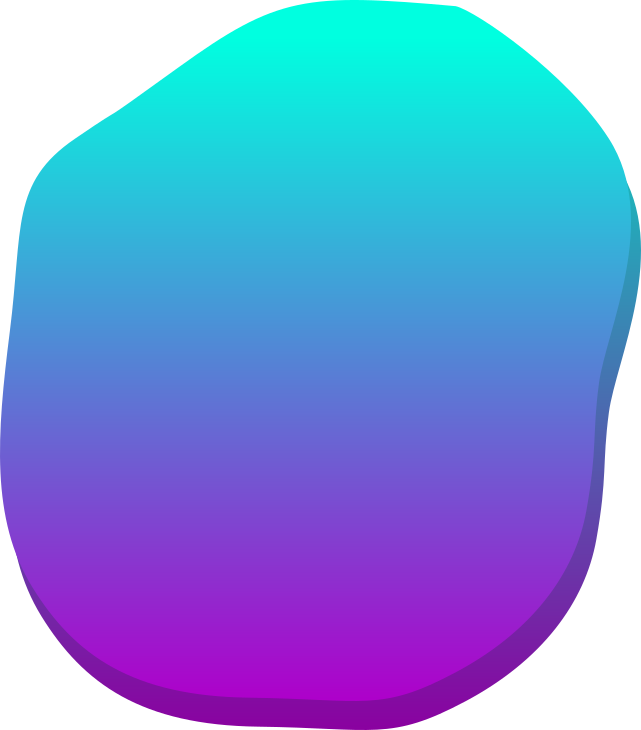

Профессиональная ориентация
Подросткам
Родителям
Тесты

Что включает в себя профессиональная ориентация
Плюсы и минусы IT профессии
Варианты получения профессии
Советы по выбору рабочей специальности
Ошибки при выборе будущей профессии